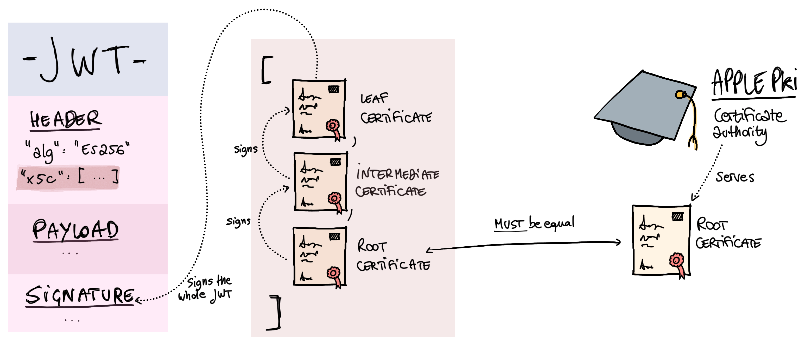

Verifying JWTs from Apple's App Store
If you've ever had to interact with Apple APIs related to App Store purchases and whatnot (like the App Store Server Notifications), there's a chance you had to verify JWTs at some point. I had used, signed, and verified JWTs extensively before this, but Apple uses a bit of a unique way of signing their JWTs that I had never stumbled upon in the past. In this short post, I'll show some code around verifying Apple's JWT signatures in Elixir.

At Veeps, we're working on some features connected to the App Store. This involves verifying that the notifications (webhooks) that Apple sends to us are legitimate.
One note before we start: I'm using the term JWT here mostly out of ignorance and out of desire to bump this blog post's ranking in search engines! What Apple sends to us is a JWS (JSON Web Signature). JWTs are the payload that ships inside a JWS. RFC 7519 is the one you want to take a look at if you want to know more about this. Anyway, minutiae.
Let's first have a look at the general idea of how Apple signs these JWTs. After that, we'll look at some Elixir code.
The deal with Apple's JWTs is that they are signed via certificates rather than via symmetric or asymmetric signatures. Essentially, Apple signs the JWT's payload with a private key. Then, they include the public key for that in a DER certificate in the JWS itself (the "leaf" certificate). That certificate is itself signed by an intermediate certificate, which in turn is signed via their root certificate. The root certificate and intermediate certificate are public and available through Apple's certificate authority (Apple PKI).
Some Elixir Code
You technically don't really need any third-party Elixir/Erlang libraries for this, but I opted to use two nimble and widely-used ones:
-
JOSE is a foundational Erlang library (with an Elixir API as well) that implements many of the components described in the series of RFCs around JOSE (Javascript Object Signing and Encryption). I've used this library many times in the past for signing and verifying JWTs.
-
X509 is an Elixir library that simplifies working with X.509 certificates. It's built by Bram Verburg, who I consider to be the most knowledgeable person around web security in the Erlang and Elixir communities.
Let's get into it.
Decoding the JWS's Header
The first thing you want to do when verifying one of these JWTs is to peek at its header. This doesn't do any verification, but the header contains the certificate chain that we need to verify the JWT's signature, so we gotta look at it. JOSE provides a JOSE.JWT.peek_protected/1 function that returns the JWT's header as a raw JSON-encoded string:
decoded_header =
signed_payload
|> JOSE.JWS.peek_protected()
|> Jason.decode!()
Right. The algorithm should be ES256, so why not throw in a check for that:
% = decoded_header
Extracting and Verifying the Certificates
Next, we need to look at the x5c in the header. The x5c header field is documented in the JWT RFC (RFC 7515, sec. 4.1.6). It's a JSON array of base-64-encoded DER PKIX certificates. Those are complex acronyms that you and I really don't have to care about. The RFC (and Apple) says that you must validate the certificate chain.
First, let's extract the certificate chain:
# We pattern match on [_ | _] to make sure that the list of certs
# isn't empty.
% = decoded_header
cert_chain = Enum.map(base64_cert_chain, &Base.decode64!/1)
Now, we can verify the certificate chain. We'll follow the process that I described above:
- We'll check that the root certificate is the same as the certificate that Apple offers on Apple PKI.
- We'll check that the certificate chain is valid, meaning that each certificate was used to sign the next one in the chain.
The code below assumes that you downloaded the Apple root certificate (AppleRootCA-G3 in particular). It reads it at compile time and embeds it in the bytecode of the module, so that you don't have to ship the file with your production application or release.
@apple_root_cert File.read!()
case :public_key.pkix_path_validation(
@apple_root_cert,
[raw_intermediate, raw_leaf],
[]
) do
-> true
-> false
end
end
false
end
Bram basically hand-held me through this code, so thank you, Bram! We can use the valid_certificate_chain?/1 helper function to verify the certificate chain and blow up if it doesn't look right:
if not valid_certificate_chain?(cert_chain) do
raise
end
Verifying the JWS's Signature
Lastly, the final (and fundamental) step: we need to check that the X.509 key in the leaf certificate was used to sign the whole JWT. JOSE provides the JOSE.JWK.from_key/1 function to build a JWK struct from a public key:
jwk =
leaf_cert
|> X509.Certificate.from_der!()
|> X509.Certificate.public_key()
|> JOSE.JWK.from_key()
Now, the easiest part of all of this: we just use JOSE's verify/2 function to verify the signature in the JWT:
case JOSE.JWT.verify(jwk, signed_payload) do
->
->
->
end
Conclusion
There's not much else to say about this. I spent a bunch of time on it and how to do it in Elixir after finding several pieces of code to do this in other languages. For example, Apple provides "App Store libraries" for a bunch of languages (take a look at the Python one). Apple also provides a useful video that explains this process.
Well, hope this helps someone. Thanks for stopping by!